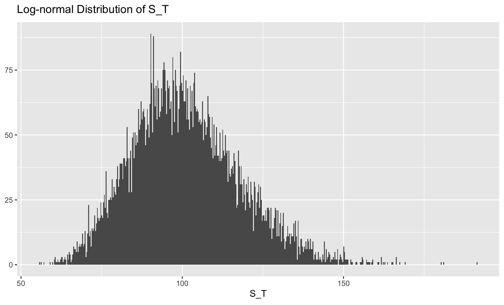
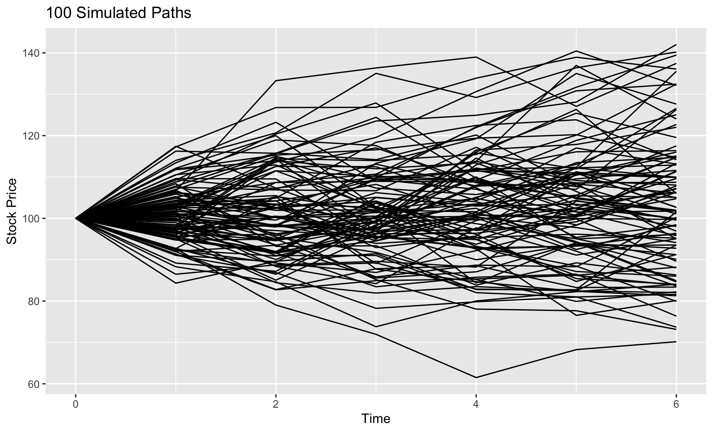

# Set a seed too so I can reproduce the exact numbers
set.seed(123)
# Parameters
r <- 0.028
sigma <- 0.255
time_T <- 0.5
dt <- 1/12
t_total <- time_T / dt
s_0 <- 100
N <- 10000Why am I posting about this?
School has started up, and I’m in a class called Financial Computing. I thought it might be interesting to share some of my assignments and explain what I learn along the way. Most of the posts won’t be describing the Stochastic Calculus involved in each assignment, but will instead focus on the details of the implementation in R. I don’t claim to have the best way for any of these assignments, but perhaps you can learn something!
What are we doing today?
In this post, I’ll work through simulating paths of a stock that follows the log normal distribution used in the Black Scholes model. Importantly, I’ll explain my thought process as I tried to optimize the implementation from loops to vectors.
As an added bonus, at the very bottom is some extra content on a basic function that I have created to replicate the concept of broadcasting from Python. Someone could (should?) probably create an entire package out of this idea.
The Model
Under the Black Scholes model, the stock price, \(S_t\), at time t follows a Geometric Brownian Motion, which means that it satisfies the Stochastic Differential Equation:
\[ dS_t = r S_t dt + \sigma S_t dW_t \]
Where:
- \(r =\) Drift - The average log return per time unit
- \(\sigma =\) Volatility - How much variance is in that drift
-
\(W_t =\) Brownian Motion - Random noise from a normal distribution with mean
0and variancet
Interestingly, we actually have the solution to this equation (one of the few we have analytical solutions for):
\[ S_t = S_0 \times e^{(r - \frac{1}{2} \sigma^2) t + \sigma W_t} \]
More generally, this can be written as a formula providing us with the recursive equation:
\[ S_{t_i} = S_{t_{i-1}} \times e^{(r - \frac{1}{2} \sigma^2) ({t_i - t_{i-1}}) + \sigma (W_{t_i} - W_{t_{i-1}}) } \]
If you want to know how to get the solution, this is a pretty good explanation, but be prepared to learn about Ito’s Lemma.
Really, dude?
Okay, that’s a lot without any explanation, and I get that. But the point of this post is more to explain how to simulate paths of \(S_t\). So how do we do that?
- We will start from time 0 with an initial stock price, then we will generate the next stock price from that using the recursive formula, and so on.
- The only random piece is the brownian motion increment (
dW), which we will generate at each time point using draws from a normal distribution. - The time increment will be a constant value (
dt) to keep things simple.
I was given some starting parameters:
Where time_T and dt mean each simulation path will go from time 0 to time_T by increments of dt. Dividing time_T / dt gets us the total number of time steps required. N is the number of paths to simulate.
First attempt
We all know loops are to be avoided when you can in R, and that you should instead vectorize the operations. At first, I thought this wasn’t going to be possible, as this is a recursive type of formula where the next value relies on the previous one. With that in mind, I created the following implementation.
First off, set up a matrix to fill with the 10000 simulations (one per row), each one having 6 time steps (7 columns total including the initial stock price).
# Create a 10000x7 matrix of NA's to fill in
# Each row is a simulation
s <- matrix(NA_real_, nrow = N, ncol = t_total+1)
# The first column is just the initial price
s[,1] <- s_0
head(s)
#> [,1] [,2] [,3] [,4] [,5] [,6] [,7]
#> [1,] 100 NA NA NA NA NA NA
#> [2,] 100 NA NA NA NA NA NA
#> [3,] 100 NA NA NA NA NA NA
#> [4,] 100 NA NA NA NA NA NA
#> [5,] 100 NA NA NA NA NA NA
#> [6,] 100 NA NA NA NA NA NASo far so good, now let’s create a matrix for dW, our brownian motion increments. A very important fact is that these are all independent of each other, so the generation of them is straightforward. Each increment:
\[ W_{t_i} - W_{t_{i-1}} \]
can be drawn from a normal distribution with mean 0 and variance \(t_i - t_{i-1}\) (which is what I have defined as dt because it is a constant).
# ~N(0, dt)
# To fill in 10000 simulations, and move forward 6 steps, we need a 10000x6 matrix
dW <- rnorm(N * t_total, mean = 0, sd = sqrt(dt))
dW <- matrix(dW, N, t_total)
head(dW)
#> [,1] [,2] [,3] [,4] [,5] [,6]
#> [1,] -0.16179538 0.68436942 -0.24141807 -0.05588936 0.13929365 0.07493710
#> [2,] -0.06644652 -0.04815446 -0.06367394 0.07452070 0.20824004 0.26486253
#> [3,] 0.44996033 0.26759071 -0.60723241 -0.15539745 -0.14658701 -0.20851535
#> [4,] 0.02035402 -0.16401128 -0.48145457 -0.34036612 -0.01867981 -0.23333150
#> [5,] 0.03732215 0.06497791 -0.31695458 0.25999452 0.37589000 -0.04080481
#> [6,] 0.49509662 0.32677618 -0.48082343 -0.00469084 -0.06311503 0.65154366Based on this setup, I thought I would need a loop. The algorithm would step through the 10000 simulations all at once, but would have to loop through the 6 time steps one at a time, because each time step depended on the previous one. So, following the formula (below again for reference) I did this:
\[ S_{t_i} = S_{t_{i-1}} \times e^{(r - \frac{1}{2} \sigma^2) ({t_i - t_{i-1}}) + \sigma (W_{t_i} - W_{t_{i-1}}) } \]
for(i in 1:(t_total)) {
s[,i+1] <- s[,i] * exp((r - 1/2 * sigma^2) * dt + sigma * dW[,i])
}
head(s)
#> [,1] [,2] [,3] [,4] [,5] [,6] [,7]
#> [1,] 100 95.92209 114.16839 107.31161 105.75330 109.53595 111.60722
#> [2,] 100 98.28292 97.04695 95.44803 97.24258 102.50728 109.62854
#> [3,] 100 112.11600 119.98823 102.73710 98.70849 95.05115 90.09528
#> [4,] 100 100.48258 96.33055 85.16909 78.05933 77.65918 73.14576
#> [5,] 100 100.91830 102.56581 94.56668 101.01083 111.13033 109.93864
#> [6,] 100 113.41388 123.22299 108.96314 108.79196 107.01479 126.30943And that does work! But can we avoid the loop? YES WE CAN!
MATH
To avoid the loop, we are going to manipulate a simple case, and then apply it generally. One key element for this vectorization is that brownian motion increments are independent. Let’s think about what actually happens from time 0->1 and from 1->2.
\[ S_1 = S_0 \times e^{(r - \frac{1}{2} \sigma^2) (t_1 - t_0) + \sigma (W_1 - W_0)} \] \[ S_2 = S_1 \times e^{(r - \frac{1}{2} \sigma^2) (t_2 - t_1) + \sigma (W_2 - W_1)} \]
If we plug the equation for S_1 into the equation for S_2…
\[ S_2 = (S_0 \times e^{(r - \frac{1}{2} \sigma^2) (t_1 - t_0) + \sigma (W_1 - W_0)}) \times e^{(r - \frac{1}{2} \sigma^2) (t_2 - t_1) + \sigma (W_2 - W_1)} \]
And then combine exponents…
\[ S_2 = (S_0 \times e^{(r - \frac{1}{2} \sigma^2) (t_1 - t_0 + t_2 - t_1) + \sigma (W_1 - W_0 + W_2 - W_1)}) \]
Notice that some of the t and W terms cancel:
\[ S_2 = (S_0 \times e^{(r - \frac{1}{2} \sigma^2) (t_2 - t_0) + \sigma (W_2 - W_0)}) \]
And by definition t_0 and W_0 are 0:
\[ S_2 = S_0 \times e^{(r - \frac{1}{2} \sigma^2) t_2 + \sigma W_2} \]
This is actually the form that was proposed as the solution to the geometric brownian motion stochastic differential equation:
\[ S_t = S_0 \times e^{(r - \frac{1}{2} \sigma^2) t + \sigma W_t} \]
It looks like we can actually generate S_2 without needing to know S_1 at all. Notice that the exponent now contains t_2 and W_2. t_2 is known beforehand, but W_2 seems like it would rely on W_1 in a way that has to be recursively calculated. Actually, if we think of W_2 as a sum of brownian motion increments (I told you this would help):
\[ W_2 = (W_2 - W_1) + (W_1 - W_0) = dW_2 + dW_1 \]
then W_2 is just the cumulative sum of the increments, and, by definition, each increment is independent of the previous increment so we can generate them all before hand (we already did this when we created the dW matrix).
# Rowwise cumulative sum of dW generates W1, W2, W3, ... for each simulation
W <- plyr::aaply(dW, 1, cumsum)
head(W)
#>
#> X1 1 2 3 4 5 6
#> 1 -0.16179538 0.5225740 0.2811560 0.22526661 0.3645603 0.4394974
#> 2 -0.06644652 -0.1146010 -0.1782749 -0.10375422 0.1044858 0.3693483
#> 3 0.44996033 0.7175510 0.1103186 -0.04507883 -0.1916658 -0.4001812
#> 4 0.02035402 -0.1436573 -0.6251118 -0.96547795 -0.9841578 -1.2174893
#> 5 0.03732215 0.1023001 -0.2146545 0.04534000 0.4212300 0.3804252
#> 6 0.49509662 0.8218728 0.3410494 0.33635853 0.2732435 0.9247872Unlike the recursive formula from before where dt was used, the time that we are currently at, t, is used instead so we will need that as well.
time_steps <- matrix(seq(from = dt, to = time_T, by = dt),
nrow = N, ncol = t_total, byrow = TRUE)
head(time_steps)
#> [,1] [,2] [,3] [,4] [,5] [,6]
#> [1,] 0.08333333 0.1666667 0.25 0.3333333 0.4166667 0.5
#> [2,] 0.08333333 0.1666667 0.25 0.3333333 0.4166667 0.5
#> [3,] 0.08333333 0.1666667 0.25 0.3333333 0.4166667 0.5
#> [4,] 0.08333333 0.1666667 0.25 0.3333333 0.4166667 0.5
#> [5,] 0.08333333 0.1666667 0.25 0.3333333 0.4166667 0.5
#> [6,] 0.08333333 0.1666667 0.25 0.3333333 0.4166667 0.5Now it’s a vectorized one-liner to calculate the stock price at each time!
# Stock price simulation
s_t <- s_0 * exp((r - 1/2 * sigma^2) * time_steps + sigma * W)
# Add the original stock price onto the front
s_t <- cbind(s_0, s_t)
# Add 0 as the column name for initial value (it's important I promise)
colnames(s_t)[1] <- "0"
head(s_t)
#> 0 1 2 3 4 5 6
#> 1 100 95.92209 114.16839 107.31161 105.75330 109.53595 111.60722
#> 2 100 98.28292 97.04695 95.44803 97.24258 102.50728 109.62854
#> 3 100 112.11600 119.98823 102.73710 98.70849 95.05115 90.09528
#> 4 100 100.48258 96.33055 85.16909 78.05933 77.65918 73.14576
#> 5 100 100.91830 102.56581 94.56668 101.01083 111.13033 109.93864
#> 6 100 113.41388 123.22299 108.96314 108.79196 107.01479 126.30943Just as a sanity check, this should have produced the same results as the for loop
# ignore the dimname attributes
all.equal(s, s_t, check.attributes = FALSE)
#> [1] TRUENow what?
There are a number of interesting things we could do with these results. One is to calculate the fair price of a European Option on this stock. I think I’ll save that for the next post.
Something else we might do is visualize the distribution of \(S_T\), the stock price at the terminal (final) time. Because the stock price is modeled as an exponential of a normal random variable (W_t), the stock price itself has a log-normal distribution. For practicality, this means that it is right tailed and can’t drop below 0 (good properties of a stock).
library(tidyverse)
# let's just take a moment and admire the fact that I can put LaTeX in ggplots
library(latex2exp)
tibble::tibble(s_T = s_t[,6]) %>%
ggplot(mapping = aes(x=s_T)) +
geom_histogram(bins = 500) +
labs(x = TeX('S_T'), y = NULL, title = TeX('Log-normal Distribution of S_T') )
We could also look at the 6-step path of 100 of our simulations.
as_tibble(s_t) %>%
rownames_to_column(var = "iteration") %>%
gather(time_step, stock_price, -iteration) %>%
mutate(time_step = as.numeric(time_step),
iteration = as.factor(iteration)) %>%
filter(iteration %in% 1:100) %>%
ggplot(aes(x = time_step, y = stock_price, group = iteration)) +
geom_line() +
labs(x = "Time", y = "Stock Price", title = "100 Simulated Paths")
Conclusion + Extra Content
If I haven’t bored you to tears yet, allow me to thank you for sticking around this long. I think these posts are useful because they force me to try and understand a concept a bit more than if I was just reading it from a book.
As you may have noted in the post above, I had to create a large matrix time_steps for R to perform the matrix addition I wanted correctly. I thought it would have been simple. Ideally I could create a 1x6 matrix of times, and add it to a 10000x6 matrix of the brownian motions and have the times matrix broadcasted to each row of the brownian motion matrix, adding element by element to each row. This works in Python and Matlab, but R has a mind of it’s own.
That’s not right, it’s adding 1 to the first column of x2, then 2 to the second column of x2. To get what I want I could butcher it like this:
If x1 was a matrix instead of a vector, then it gives a non-conformable array error.
x1 <- matrix(x1, ncol = 2)
x1
#> [,1] [,2]
#> [1,] 1 2
x1 + x2
#> Error in x1 + x2: non-conformable arraysSo R is super strict here. That’s fine and all, but with other languages able to do this, and with it being such a natural way of thinking about this type of addition, I decided to roll my own function that allows me to add matrices together that meet certain conditions by broadcasting one of them over the other.
# Broadcast addition
# One of the special % % operators
`%+%` <- function(e1, e2) {
stopifnot(is.matrix(e1))
stopifnot(is.matrix(e2))
# e1 - e2 & 1 has more rows & equal cols
if(nrow(e1) >= nrow(e2) & ncol(e1) == ncol(e2)) {
case <- "1"
# e1 - e2 & 2 has more rows & equal cols
} else if(nrow(e1) < nrow(e2) & ncol(e1) == ncol(e2)) {
case <- "2"
# e1 - e2 & 1 has more cols & equal rows
} else if(ncol(e1) >= ncol(e2) & nrow(e1) == nrow(e2)) {
case <- "3"
# e1 - e2 & 2 has more cols & equal rows
} else if(ncol(e1) < ncol(e2) & nrow(e1) == nrow(e2)) {
case <- "4"
# Fail
} else {
stop("Incorrect dims")
}
switch(case,
"1" = t(apply(e1, 1, function(x) {x + e2})),
"2" = t(apply(e2, 1, function(x) {x + e1})),
"3" = t(apply(e1, 2, function(x) {x + e2})),
"4" = t(apply(e2, 2, function(x) {x + e1})))
}Let’s see what this thing can do!
x1 %+% x2
#> [,1] [,2]
#> [1,] 2 4
#> [2,] 4 6Nice! That’s what I want. One thing to note is that order of operations don’t work quite as you’d expect because of the precedence of the special %+% operator in relation to + and *, so you have to be really explicit.
Armed with the ability to broadcast addition, let’s redo the last step of the stock price simulation.
# Instead of a massive matrix, just create a 1x6
time_steps <- matrix(seq(from = dt, to = time_T, by = dt), nrow = 1, ncol = t_total)
time_steps
#> [,1] [,2] [,3] [,4] [,5] [,6]
#> [1,] 0.08333333 0.1666667 0.25 0.3333333 0.4166667 0.5
# Remember that W is 10000x6
head(W)
#>
#> X1 1 2 3 4 5 6
#> 1 -0.16179538 0.5225740 0.2811560 0.22526661 0.3645603 0.4394974
#> 2 -0.06644652 -0.1146010 -0.1782749 -0.10375422 0.1044858 0.3693483
#> 3 0.44996033 0.7175510 0.1103186 -0.04507883 -0.1916658 -0.4001812
#> 4 0.02035402 -0.1436573 -0.6251118 -0.96547795 -0.9841578 -1.2174893
#> 5 0.03732215 0.1023001 -0.2146545 0.04534000 0.4212300 0.3804252
#> 6 0.49509662 0.8218728 0.3410494 0.33635853 0.2732435 0.9247872
# Add using broadcasted addition, making sure to be careful about parenthesis!
s_t <- s_0 * exp(((r - 1/2 * sigma^2) * time_steps) %+% (sigma * W))
s_t <- cbind(s_0, s_t, deparse.level = 0)
head(s_t)
#> [,1] [,2] [,3] [,4] [,5] [,6] [,7]
#> 1 100 95.92209 114.16839 107.31161 105.75330 109.53595 111.60722
#> 2 100 98.28292 97.04695 95.44803 97.24258 102.50728 109.62854
#> 3 100 112.11600 119.98823 102.73710 98.70849 95.05115 90.09528
#> 4 100 100.48258 96.33055 85.16909 78.05933 77.65918 73.14576
#> 5 100 100.91830 102.56581 94.56668 101.01083 111.13033 109.93864
#> 6 100 113.41388 123.22299 108.96314 108.79196 107.01479 126.30943So much better! I have used this a few times in the past month or so. Credit to Alex Hayes for teaching me a bit about why broadcasting is awesome. I created the base for %+% in response to his comments here.